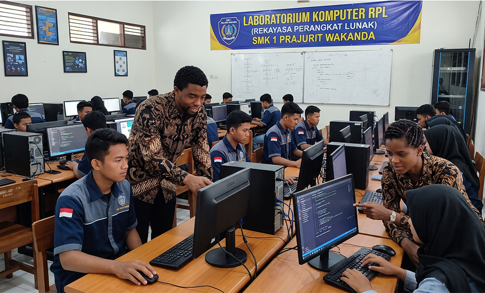

Kode Jurusan: RPL
1. Rekayasa Perangkat Lunak (RPL)
Program keahlian Rekayasa Perangkat Lunak membekali peserta didik dengan kemampuan merancang, mengembangkan, menguji, dan memelihara aplikasi berbasis web, desktop, maupun perangkat bergerak sesuai standar rekayasa perangkat lunak modern.
Kompetensi yang Dipelajari
- Pemrograman Web (HTML5, CSS3, JavaScript, PHP)
- Perancangan & Administrasi Basis Data (MySQL)
- Pemrograman Berorientasi Objek & Mobile App
- Analisis Sistem, UI/UX Design, & Pengujian Aplikasi
Prospek Pekerjaan Lulusan
- Full-Stack / Front-End Web Developer
- Mobile Application Developer
- Database Administrator & System Analyst
- Quality Assurance (QA) & IT Startup Founder